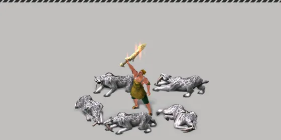
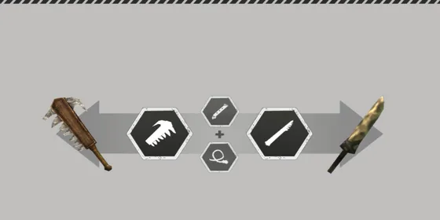

Home › Gathering & Crafting
Item attributes Live
Latent and rare (green) attributes — how you get them while gathering, how they carry over when crafting, and what each one does
Some sections on this page are not ready yet
Each material may come with attributes such as «Firm», «High Density», or green ones like «Black Sheen». When you craft, the attributes of the material in the main slot become attributes of the product — more attack, more durability, or special effects like bleeding.

Where to see attributes
- Open Item Info for the item
- Attributes show as chips with their level — the color tells how rare they are:
| Color | Meaning |
|---|---|
| Green | Rare Attribute — a special effect |
| Yellow | a good attribute |
| Normal | a basic attribute |
| Gray | a negative attribute |
- Tap a chip to read its description · combat/gathering rare attributes have no number on the stats page — read the chip's description instead
Attributes from gathering Live
When you gather or butcher, each piece can get two kinds of attributes:
- Source attributes — some sources always give fixed attributes · the main one gets +1 level for each point of the island's Unstable Index above 1, and +1 on a Flawless gather
- Random latent attribute — 15% chance per piece (22.5% on a Flawless gather) · if one appears, a second roll decides whether it is green or yellow/gray
Chance to be green = material + skill + gear (total capped at 90%)
| Part | From | Formula | Max |
|---|---|---|---|
| Material | the island's Unstable Index (stable islands = 1) | 5% × Index · ×2 for big-animal parts | 50% |
| Skill | Gathering category level (carcasses: Butchering) | 20% × category level ÷ 60 | 20% |
| Gear | the tool you gather with (bare hands = what you wear) | «Secrets of Gathering» +10% · +10% × tool level ÷ 60 | 20% |
- Green level = 1 + round(chance ÷ 90% × 9) → 5% gives level 1 · 50% gives level 6 · 90% gives level 10
- If not green: yellow 70% / gray 30% · level 2–3 (+1 on a Flawless gather)
Attributes carried over when crafting Live

- Only the material in the main slot passes attributes on
- At every crafting step each attribute rolls separately to see whether it carries over — including steps whose product is a part (blade, string, plank …)
- A failed roll = the attribute is gone completely (it doesn't just lose levels) · the game tells you how many attributes were lost, once per craft (message in Thai, without names)
- Processing recipes (trimming, smelting, tanning and so on) don't roll — all attributes stay
- There is no limit on how many attributes can carry over
Chance to carry over = material + skill + gear (total capped at 90%)
| Part | From | Formula | Max |
|---|---|---|---|
| Material | that attribute's level | 5% × level | 50% |
| Skill | the category level for the product type | 20% × category level ÷ 60 | 20% |
| Gear | the tool you craft with (none = what you wear) | «Secrets of Gathering» +10% · +10% × level ÷ 60 | 20% |
| Product type | Skill category used |
|---|---|
| Weapons / tools | Weapon/Tool Crafting |
| Clothes, hats, gloves, shoes, bags, accessories | Tailoring |
| Food | Cooking |
| Furniture / structures | Build |
| Parts (blades, strings, planks, tanned leather …) | Processing |
Example: attribute level 5 (25%) · category level 30 (10%) · Lv30 tool without special attributes (5%) = 40% per step → a chain with 2 rolled steps (blade → sword) keeps it 16% of the time
What material attributes become
Once the product is a real item type, material attributes turn into product attributes. Weapon examples:
| Material attribute | On a weapon |
|---|---|
| Firm | Attack Buff |
| High Density | Durability Buff |
| Lightweight | Accuracy Buff |
| Compact Structure | Lethality Buff |
Rare material attributes turn into rare product attributes — one of two, at random:
| Material | Product | Gets one of |
|---|---|---|
| Black Sheen | weapon | Vital Strike · Throw Dirt |
| Low Vibration | weapon | Sadism · Pain Averse |
| Wide Serration Shape | tool | Gathering Mania · Extra Extra |
| Narrow Hook Shape | tool | Meticulous Gatherer · Secrets of Gathering |
| Splits Easily | workbench/structure | Shorter Duration · More Space |
Rare attributes on food (such as «A Mother's Touch») are covered in Eating.
Rare attributes and their effects Live
| Attribute | Triggers on | Effect |
|---|---|---|
| Vital Strike | critical hit (100%) | target Bleeding −6 Life/s for 10 s |
| Seeing Red | critical hit (50%) | target Bleeding −4/s for 10 s |
| Sadism | critical hit (100%) | you recover +6 Life/s for 10 s |
| Budding Sadism | critical hit (50%) | you recover +4 Life/s for 10 s |
| Throw Dirt | successful roll (50%) | enemy Distracted, accuracy −40% for 8 s |
| Throw Dirt (minor) | successful roll (20%) | enemy accuracy −20% for 8 s |
| Gathering Mania | successful gather/butcher (50%) | Invigorated, Energy +3/s for 10 s |
| Extra Extra | gathering | 10% chance of one extra item |
| Secrets of Gathering | gathering/crafting | +10% to the gear part of attribute rolls |
| Meticulous Gatherer | gathering | +5% Flawless gathering chance |
| Pain Averse | roll / parry | roll and parry last 2% longer |
| More Space | workbench | 1 more unattended job |
| Shorter Duration | workbench | −5% unattended crafting time |
- Bleeding on animals really lowers their Life, and an animal that bleeds out leaves a carcass as usual · status icons appear on both players and animals
- What counts is every item you are wearing + the tool you gather with (duplicates use the highest level)
Tips
Not on the server yet: hazards these attributes block Not ready
Some gear has «Lava Damage Prevention», «Spark Immunity» or «T-Rex Roar Prevention» — wearing it shows the status icon, but the server has no damaging lava, sparks or roars yet, so there is no visible effect. «Volcanic Storm Prevention» already works in part: standing in a volcanic storm no longer adds fatigue from that weather.